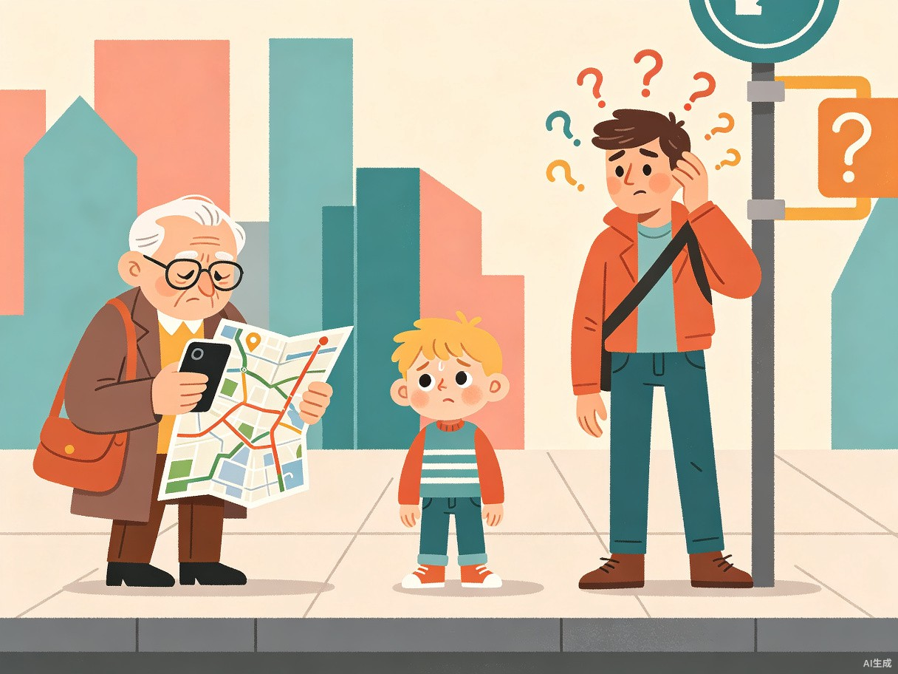
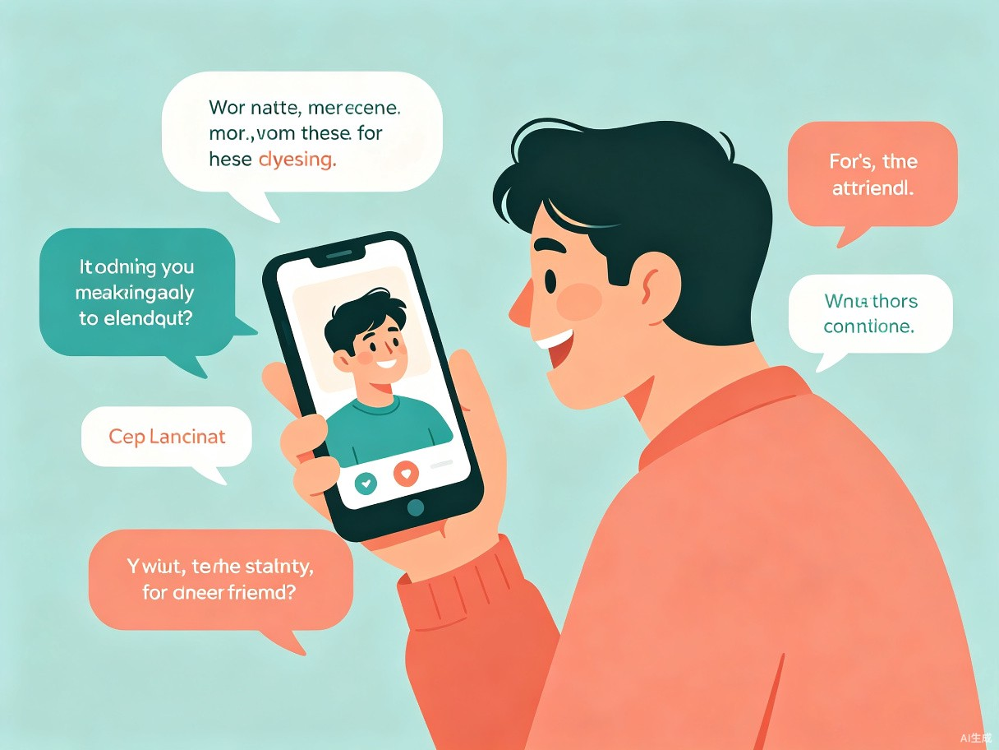
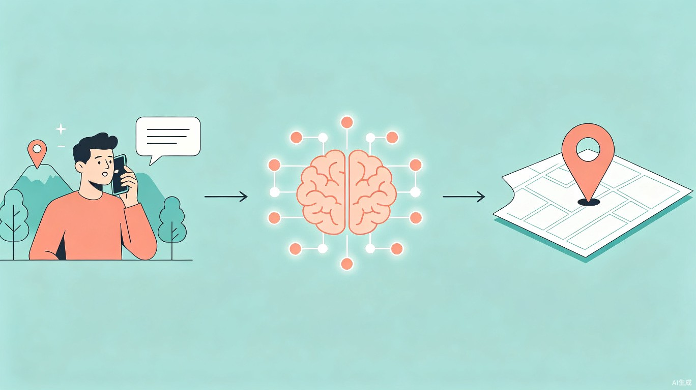
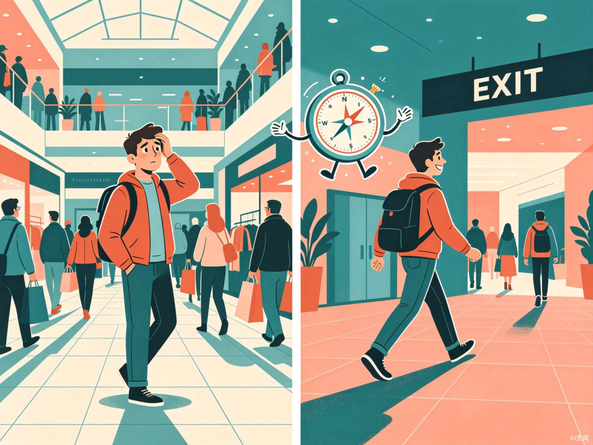

问题与灵感
每个人身边都有这样的朋友——出了门就分不清东南西北，进了商场就找不到出口，到了陌生的地方只能打电话求助。传统的导航软件对他们来说不仅没有帮助，反而增加了焦虑：复杂的路线图、需要理解方向感、必须精确知道自己的位置。
这个项目的灵感正来自一位"路痴"朋友。她的困扰很典型：
"我只知道我在星巴克旁边，但不知道自己在几楼、几号门。高德地图让我选起点，可我根本不知道起点在哪。"
核心问题很明确——现有的导航工具要求用户具备方向感和精确定位能力，而这恰恰是目标用户最缺乏的。我们需要一种全新的交互方式：用户只需像跟朋友聊天一样描述周围环境，APP 就能理解并引导他们到达目的地。

目标用户与痛点
这款 APP 面向所有在空间导航上存在困难的群体，而非某个细分市场。以下三类用户代表了最典型的使用场景：
老年人
看不懂电子地图的缩放与旋转操作，对屏幕上的抽象图形理解困难，更习惯用语言描述和口头指引。
儿童
尚未建立完整的方向概念（东西南北、左右转向），在公共场所走失时无法自行使用导航工具找到家人。
方向感薄弱者
俗称"路痴"。即便能看懂地图，在实际行走中仍容易迷失方向，需要持续、实时的语言引导。
当前核心痛点
- 定位困难 — 只能描述附近有什么地标（"我在一棵大树旁边"），但无法在地图上精确定位自己的坐标。
- 导航门槛高 — 传统导航需要理解"向北走200米后左转"这类指令，对方向感弱的人来说等同于天书。
- 焦虑与无助 — 迷路时情绪紧张，面对复杂的地图界面更加手足无措，形成恶性循环。
- 社交依赖 — 每次迷路都需要打电话给朋友或家人求助，既麻烦又影响他人。
产品概念
"引路人"是一款基于大语言模型的拟人化语音导航 APP。它的核心理念是：将导航从"工具操作"转变为"自然对话"。

核心交互方式
用户打开 APP 后，直接用语音说出自己看到的东西——"我在一个很大的喷泉旁边，左边有个红色的建筑"——大模型会结合 GPS 粗定位和视觉/语义信息，推算出用户的精确位置，然后以拟人化的语音进行导航。
示例对话：
用户："我在星巴克，旁边有个大屏幕，我想去地铁口。"
APP："好的！我看到你附近有一家星巴克和一块大型 LED 屏幕，你应该是万达广场 B1 层的那家对吧？地铁口在往上走一层就能到，我先带你找到扶梯——你现在面朝哪个方向？看到收银台了吗？"
三大核心能力
模糊定位 · 精确推算
用户只需描述身边的显著地标、建筑特征、店铺名称等自然语言信息，大模型结合 GPS、Wi-Fi 指纹和环境语义进行多源融合定位，将模糊描述转化为精确坐标。
拟人对话 · 持续引导
全程语音交互，APP 以友好、耐心的"朋友"形象进行对话式导航。不走"向东北方向前进200米"的机械指令，而是说"你看到前面那个蓝色的牌子了吗？往那边走"。
实时纠偏 · 情绪陪伴
当用户走错路时，APP 不会冷冰冰地提示"偏离路线"，而是说"没关系，我们往回走几步就好"，并实时调整路线，全程保持陪伴感。
技术构想
实现"模糊描述 → 精确定位 → 拟人导航"的闭环，需要多模态大模型、空间语义理解和实时语音合成三大技术栈的协同。

关键技术模块
| 模块 | 说明 | 核心技术 |
|---|---|---|
| 语音识别 | 将用户的口语描述实时转为文本，支持方言和口音 | ASR 模型、方言适配 |
| 语义理解 | 从自然语言中提取地标、方位、环境特征等空间信息 | 大语言模型、NLU |
| 多源定位 | 融合 GPS + Wi-Fi + 蓝牙信标 + 语义信息，推算精确位置 | 多传感器融合、POI 匹配 |
| 路线规划 | 基于精确起点和目的地，生成步行友好路线 | 路径算法、无障碍地图 |
| 拟人导航 | 将路线转化为自然、友好的语音指令，实时引导 | TTS 语音合成、对话管理 |
使用场景

王奶奶第一次独自去市中心的医院，到了附近但找不到门诊楼。她打开"引路人"说："我在一个很大的停车场旁边，看到好多人在排队。"
8岁的小明在商场和妈妈走散了。他打开 APP 说："我在一个卖玩具的店门口，里面有很多毛绒玩具。"
大一新生小李第一次来新校区，找不到实验楼。他说："我在一个有雕像的广场旁边，前面有一片很大的草坪。"
价值与意义
引路人不仅仅是一个导航工具，它代表了一种以人为本、降低技术门槛的产品哲学。在图形化导航已经高度成熟的今天，仍有大量人群被排除在数字导航的便利之外。我们的目标是用最自然的方式——对话——弥合这一鸿沟。
降低使用门槛
不需要理解地图、方向或坐标系，会用嘴说话就能用，真正实现"零学习成本"。
情绪价值
拟人化的交互带来陪伴感和安全感，让迷路时的焦虑被温暖的话语化解。
信息无障碍
为视障人士、老年人、儿童等群体提供平等的出行能力，推动社会包容性。
差异化定位：传统导航是"工具"——你需要学会使用它；引路人是"伙伴"——它来适应你。这种范式的转变，正是这款产品的核心竞争力和存在意义。